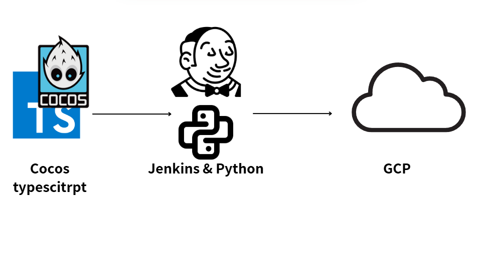

核心優勢
- 帶領 6 人 H5 遊戲開發團隊｜現任開發一部部長：排程、技術決策、績效與招募
- 推動 AI 原生開發｜設計「人輔助 AI」開發工作流並導入全團隊，一個指令完成 Review → Commit
- 自動化與架構提效｜Jenkins + Python 版本產出時間減少 70% 以上；SLOT 公版單款串接 3 天 → 1 天以內
- 線上品質與風險控管｜白名單先行測試、熱更新／回滾、雙平台上架；首屏載入 10 秒 → 7 秒
- 9 年遊戲前端實務經驗（2016 起）｜Cocos2d-x 至 Cocos Creator；SLOT、押分機、麻將、魚機，跨 Android／iOS／H5
AI 導入成果
從「AI 輔助人」到「人輔助 AI」：把團隊開發經驗封裝成 AI 可重複執行的流程，AI 負責撰寫與初審，人負責定規格與把關。從 GitHub Copilot Agent 到 Claude Code，6 人團隊全數納入日常開發。
- Code Review 一個指令完成：將團隊 Review 規範與 Commit 流程封裝成 AI 流程，原本需兩次手動操作，改為一個指令完成 Review → Commit，任何成員執行都得到一致的審查品質
- 每日自動 Code Review：排程只審查新增的變更，問題連同來源 Commit 與作者推送團隊通知，程式碼被改壞時不需等到人工發現
- 規格驅動的 AI 開發：需求先拆成小顆粒度的計畫與 Task，經人確認後 AI 才能動手；每個 Task 附驗收條件，以實際結果驗收，不以「AI 說完成」為準
- AI 直接操作遊戲編輯器：透過 MCP 讓 AI 操作 Cocos Creator 的節點、元件、Prefab 與場景
- 開發知識沉澱：開發決策寫成 ADR 文件回存知識庫，下次開發自動引用，形成「開發 → Review → Commit → 知識累積」的迴圈
- 企劃也能用 AI 參與開發：與企劃訂定協作規範（暫代素材命名、非正式需求另切 Branch、週會先提緊急需求），企劃在 Branch 上開發，正式規格經工作流進主線，暫時需求不影響主線
- README 單一資訊來源：網址、測試環境、建置任務、分支規則集中記錄，減少重複詢問，新成員可直接從文件上手
實作細節（/ts-review、/cocos-develop、SubAgent 與 Context Engineering 設計）請見作品區「AI 工作流作品集」。
技術主管經驗
團隊管理
- 團隊規模：6 人 H5 遊戲開發團隊
- 排程與人力調度：工時評估、交付承諾、跨專案分配
- 面試與招募：職缺定義、技術面試、人選評估
- 績效評核：績效評估與一對一回饋
- 新人 Onboarding：上手流程與教學文件
- 技術輔導：成員問題排除、開發知識文件化
技術治理
- 開發框架與標準：TypeScript 規範、Code Review 清單、架構原則
- SLOT 公版產線：由複製改為公版沿用，單款串接 3 天 → 1 天以內，公版變更只需改一處；並優化資源包與快取策略
- 引擎升級：主導 Cocos Creator 2.x → 3.x 升級與風險評估
品質與線上風險管理
- 白名單先行測試：新版本受控範圍驗證後再全量發布
- Hotfix 決策：判斷修復方式與上線時機，經熱更新快速修正
- 版本回滾：回滾與強制更新機制
- 事後檢討：根因回饋至開發流程與自動化檢查
跨部門協作與技術推廣
- 平行協作對象：企劃／Server 端團隊／美術動畫／品檢 QA／營運
- 跨部門自動化：協助品檢團隊整合 GitLab Issue × Google Sheet
- 新技術導入：AI Coding Agent、Jenkins CI/CD、公版架構
- 對內技術分享：Jenkins 自動化建置、產品轉化率分析
- 競品分析：拆解海外 SLOT 的遊戲體驗與演出節奏，整理成文件分享
經歷
網銀國際（台北分公司）
2024.04 – 現在H5 遊戲開發處／開發一部部長
- 帶領團隊導入 AI Coding Agent 與「人輔助 AI」開發工作流，建立團隊 AI 開發規範與跨職能協作規範
- 協助品檢團隊建立 GitLab Issue 與 Google Sheet 整合自動化流程
- 1月 帶領團隊完成麻將 H5「啪麻雀」
- 1月 帶領團隊製作 H5 魚機「神話魚機」
12月 升任 H5 遊戲開發處／開發一部部長
- 接手 6 人團隊，負責排程、技術決策與成員技術輔導
- 帶領團隊進行麻將 H5 製作與「麻將之星」改版
- 以 Python + Jenkinsfile 整合 CI/CD 自動化指令流程
- 6月 完成押分機 H5「賓果行星」
4月 加入網銀國際，擔任 Cocos Creator SLOT 前端主要負責人
- 從無到有建置 Cocos Creator SLOT 開發流程並持續優化效能
- 制定開發標準與流程，協助團隊成員解決技術問題
- 整合 Jenkins CI/CD 內部開發流程
- 與 Server 端整合封包串接
- 主責完成多款 H5 SLOT（含宙斯之力、魔法師梅林）
職涯轉換期
2023.03 – 2024.033月 因家庭因素暫離職場，期間持續技術投入
- 自學 Golang，完成訂房系統 Server 與 Client
- 自學 Swift 與 SwiftUI
鈊象電子
2016 – 2023.03麻辣娛樂城平台 Client（Cocos Creator）
- 主導 Cocos Creator 2.0 升級至 3.0
- 建置 Android、iOS 專案與平台編譯自動化流程
- 建置平台熱更新與強制更新流程
- 串接第三方 SDK：iOS 儲值、Firebase、AppsFlyer、Line Login、Facebook Login、Sign in with Apple
- 負責上架 Google Play 與 App Store
FHM 遊戲平台 Client 持續開發與維護（Cocos2d-x）
- 平台功能迭代開發與線上問題排除
- 遊戲移植與版本產出維運（Android / iOS）
- 持續維護並擴充 Jenkins + Python 自動化流程
FHM 遊戲平台 Client（Cocos2d-x）
- 結合 Jenkins 與 Python 改造 APP 更新機制，優化製程並提高更新速度
- 遊戲 APP 轉化流程優化
- 遊戲移植與平台功能開發、維護
- 將 Android 專案自 Eclipse 遷移至 Android Studio，並完成第三方套件整合
iRich 遊戲平台 Client（Cocos2d-x）
- 更新機制優化
iRich 遊戲平台 Client（Cocos2d-x）
- 擔任前端遊戲工程師
- 遊戲移植與平台功能開發、維護
進入鈊象電子擔任前端工程師
- 線上平台共用工具（SDK）開發
作品

AI 工作流作品集
從「AI 輔助人」到「人輔助 AI」：遊戲前端團隊的 AI 開發工作流設計與導入（經驗 Skill 化／人輔助 AI 開發／跨職能協作）

Cocos Creator 自動化建置流程
Cocos Creator × Jenkins × Python 自動化建置

SLOT 競品分析報告
海外 SLOT 產品的遊戲體驗分析文件
團隊導入 AI Coding Agent 的規範、Agent 設定與實作經驗整理
使用 Jenkins 完成遊戲自動化建置的內部分享
透過 Log 追蹤使用者行為，分析並調校產品轉化率
Cocos Creator SLOT 遊戲，擔任前端主要負責人
- 前端遊戲開發、遊戲引擎開發
- Android、iOS、H5 三版本產出
- 自動化遊戲版本產出機制
- 串接 iOS 原生支付 SDK
自製 Cocos Creator 編輯器擴充工具，用於編輯魚群移動路徑
自學 Golang 完成的訂房系統後端
開發工具
 Claude Code
Claude Code Cocos Creator
Cocos Creator Jenkins 自動化
Jenkins 自動化 Xcode
Xcode Android Studio
Android Studio
AI 開發：Claude（Agent、Skill、MCP 設定）／GitHub Copilot Agent
版控與協作：Git／GitLab／Jenkins CI-CD／VS Code
程式技能
-
主力
Claude Code / AI Agent 開發
自訂 Agent 與 Skill／MCP 整合／團隊 AI 開發規範制定
-
主力
TypeScript / JavaScript
Cocos Creator 主要開發語言／架構設計與規範制定
-
主力
Python
Jenkins 自動化工具鏈／版本比對打包／跨系統整合
-
熟練
C++ / Lua / Objective-C / Java
Cocos2d-x 引擎與平台功能封裝／iOS、Android 原生層與第三方 SDK 串接
-
具備經驗
Golang / Swift & SwiftUI / SQL
自學完成訂房系統 Go Server 與 Client
學歷
明新科技大學｜電子工程系
- 主修計算機領域，畢業專題負責程式開發